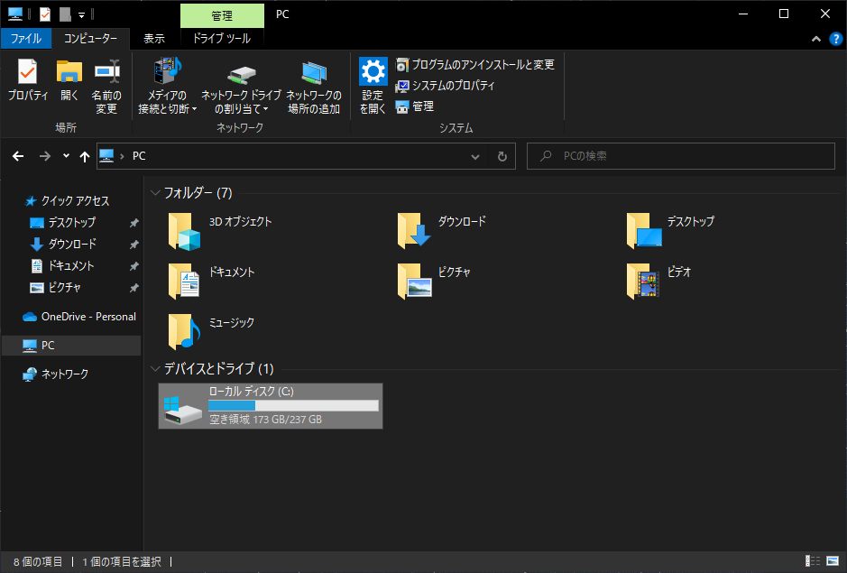
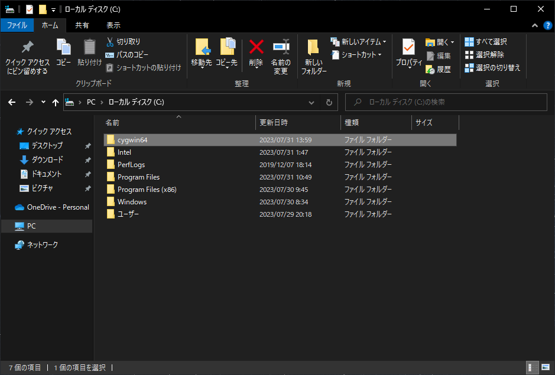
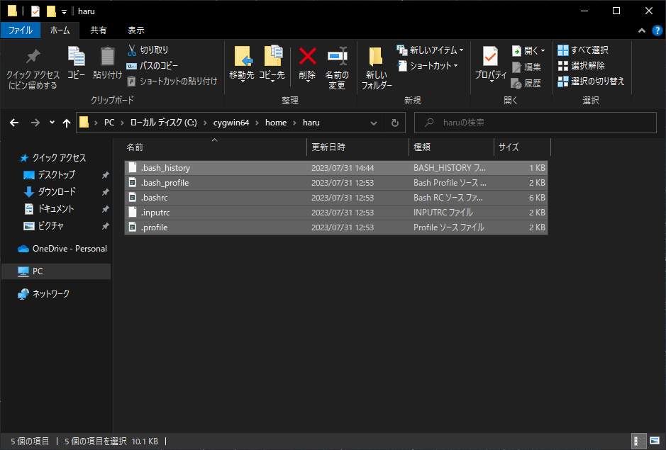
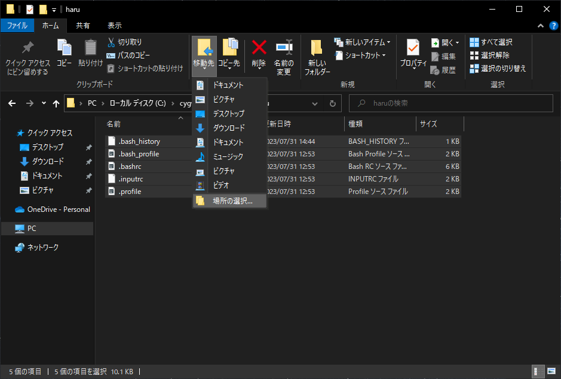
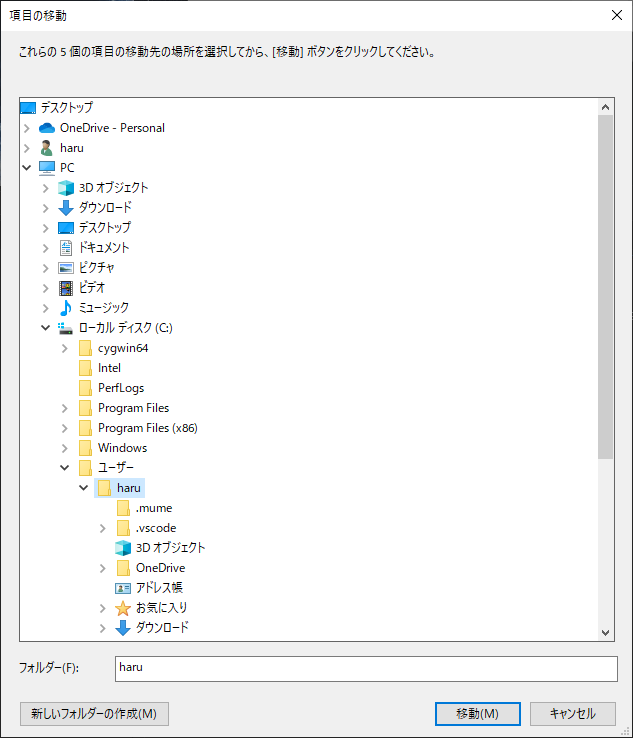
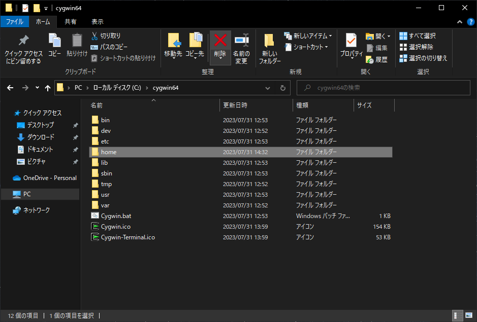
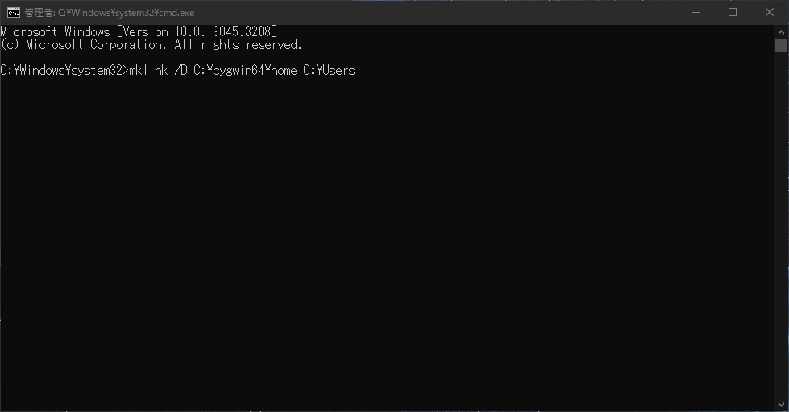

ホームディレクトリの変更方法を見る
-
エクスプローラーを開き、Cドライブを開く
 -
上の手順でインストールした場合はここにcygwin64というディレクトリが生成されるため、cygwin64のディレクトリを開く
 -
home->usrnameの順に開き、中にあるファイルをC:\Users\usernameに移動させる詳しく見る
-
移動手順1: ファイルを選択
 -
移動手順2: 上のリボンから [ 移動 ] を押し、[ 場所の選択 ] を押す
 -
移動手順3: 下の
フォルダー(F):の値が自分のユーザ名になっていることを確認し、[ 移動 ] を押す
-
-
空になった
C:\cygwin64\homeを削除する -
Win + Rでファイル名を指定して実行を開き、cmdと入力した後、Ctrl + Shiftを押しながらEnterを押し、管理者権限でコマンドプロンプトを開く
-
管理者権限でコマンドプロンプトを開けたら、以下のコードを入力し、実行する
mklink /D C:\cygwin64\home C:\Users -
このように出力されたら完了
C:\cygwin64\home <<===>> C:\Users のシンボリック リンクが作成されました -
Cygwin64 terminalを開き、以下を入力すると
C:\Users\usernameが開かれていることがわかるls -
ルートディレクトリから開きたいときはpathの先頭に
/cygdrive/と入れないといけないことに注意
以下はルートディレクトリからDocumentsを開いた例cd /cygdrive/c/Users/username/Documents/